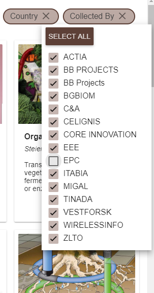
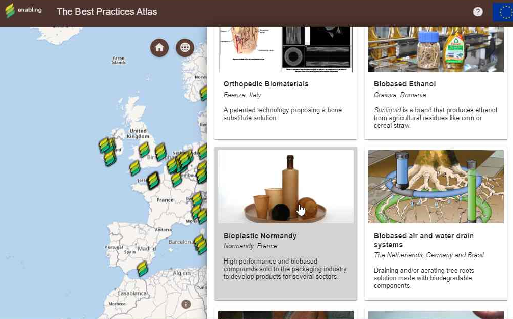

Filtering
Use your mouse to select and deselect which countries you want the best practices displayed in. You can also select and unselect all countries with the corresponding button. The same applies to selecting or unselecting partners from which the best practise was collected.
Sorting best practices
You can change default sorting of best practices to sorting by name or date. By clicking the attribute for the second time, you change the direction of sorting (descending/ascending).
Browsing best practices
When you hover your mouse over a point in the map, the points name is displayed and highlighted both in the map and in the best practices list.
The same applies to the best practices list – hover over a best practice entry in the list and the corresponding point will be highlighted in the map. The name of the point will not be displayed in the map in this case.
Selection
When you click on a best practice in the map or the list, the map will center on the point and the best practice details will be displayed.
You can then close the detail with the "X" button in the upper right corner and the map will view will move to the previous position.
Map control

You can also change the map view using the "Default" and "Zoom to all features" buttons to change the map view to the initial extent and to quickly see all displayed features.
Best practice share
You can copy a URL link including a best practice and send this link. When it's opened, the website automatically starts with the particular best practise selected.
Closing help
You can close this help dialog by pressing the Esc key, clicking the "X" button at the top right corner or anywhere outside the dialog.
Contact us
If you discover any mistakes, feel free to contact us at horak@wirelessinfo.cz